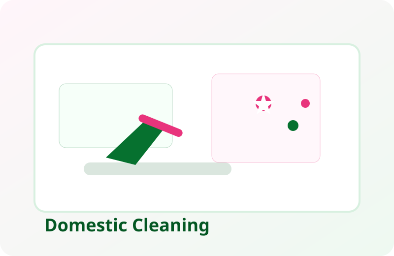
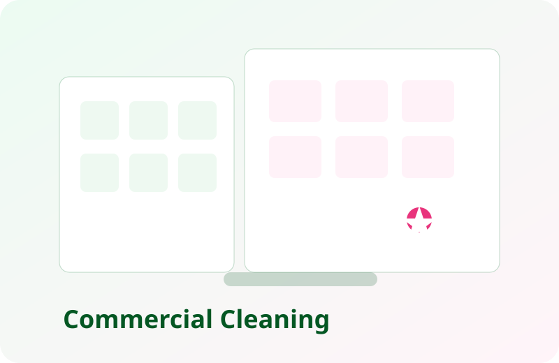
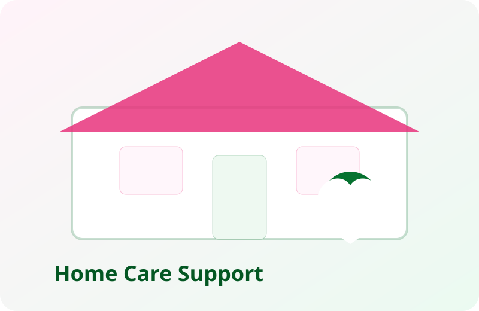

Domestic Cleaning
Weekly, fortnightly, and one-off home cleaning with consistent standards every visit.
 Helping Hands Kent Ltd
Helping Hands Kent Ltd
Domestic, Commercial and Home Care Across Kent
Helping Hands Kent Ltd supports households, landlords, offices, retail spaces, and vulnerable clients with dependable domestic cleaning, commercial cleaning, end of tenancy cleaning, non-medical home care support, clearouts, and licensed waste removal across Kent, including Canterbury, Whitstable, Herne Bay, Faversham, and surrounding villages.
We build custom plans around your needs, whether that is a family home, a busy workplace, or extra support for day-to-day home living.
We cover one-off jobs, ongoing contracts, and tailored support plans for homes, businesses, and care-focused households, including licensed clearouts and end-of-life removals. Our cleaning company works across Kent for domestic customers, landlords, letting agents, office managers, and families needing extra help at home.
Weekly, fortnightly, and one-off home cleaning with consistent standards every visit.
Flexible cleaning plans for offices, shops, clinics, and shared workspaces.
Top-to-bottom deep refresh for kitchens, bathrooms, high-traffic rooms, and neglected areas.
End of tenancy cleans plus rubbish clearance with a full waste licence, meeting landlord and letting standards.
Non-medical support including light housekeeping, tidying, laundry, and routine help at home.
Dust and residue removal after renovation, decorating, or property improvement works.
Fast, detailed reset services to keep short-stay properties guest-ready between bookings.
Practical support for everyday home tasks that keep life organised and manageable.
Full and partial clearouts for homes, rentals, garages, lofts, and commercial premises.
Respectful, discreet property clearance and cleaning support during sensitive transitions.
Reliable clearance and clean-up for probate properties, ready for valuation, sale, or handover.
Licensed removal of unwanted furniture, appliances, and general waste with compliant disposal.
Our teams deliver specialist standards across homes, businesses, and care-focused settings.

Routine and deep cleaning plans that keep kitchens, bathrooms, and living spaces fresh and hygienic.

Structured schedules for offices and shared environments where cleanliness impacts teams and customers.

Practical day-to-day support and light housekeeping that protects comfort, safety, and dignity.
Every visit follows a clear process designed to maintain consistent quality.
Before
Missed details, rushed routines, and uneven cleaning quality.
After
Reliable systems, visible results, and cleaner, calmer spaces.
Whatever your situation, we shape our service to fit your space, your schedule, and your priorities.
We do not just cover Canterbury city centre. Helping Hands Kent Ltd also provides domestic cleaning, commercial cleaning, end of tenancy cleaning, home help, and property clearouts in surrounding Canterbury villages, making it easier for local customers to find a cleaner near Canterbury.
We adapt workflows to each environment so standards remain high in every setting.
Routine domestic upkeep, deep cleans, and practical household support.
Flexible morning, daytime, and evening cleaning with minimal disruption.
Presentation-focused cleaning to keep customer-facing areas welcoming.
End-of-tenancy and turnaround services aligned to landlord expectations.
Our team is known for consistency, trust, and communication. We do not rush through a checklist, we deliver measurable improvements in cleanliness, hygiene, and comfort.
Tell us what you need, domestic or commercial, and we will build a service plan that improves standards from week one for your home, office, rental property, or support-based household.
Email: helpinghandrowena@gmail.com Call: 07963316713COVID Certified | Fully Insured | Fully Licensed Waste Clearance
Yes. We support private homes, offices, retail premises, and managed properties across Kent.
We provide non-medical practical support such as light housekeeping, tidying, laundry, and routine home help.
Absolutely. Every plan is customised by frequency, priorities, access times, and property type.
Yes. We provide licensed clearouts, end-of-life removals, and probate support with a respectful approach.